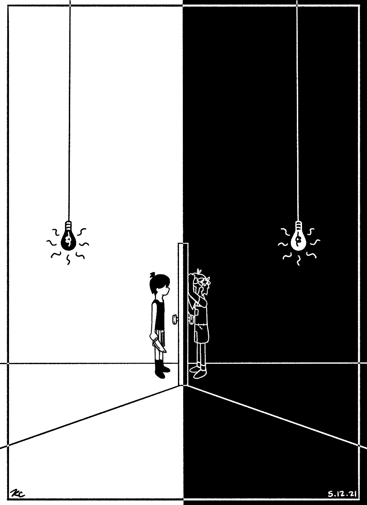

Maybe it's a little bit. . . idk, cringe or something to use a final project to tell somebody about something you enjoy, but. . . well, since I'm at a loss for information to put on this site, I figure this is as good a topic as any.
So. My favorite game is a little indie horror game by the name of Omori. It deals with such lighthearted topics as depression, anxiety, suicide, and dissociative amnesia. It also has characters with relationships you care about, and does a good job depicting what makes life worth living in the first place. Things might be broken, but even despite the difficulty, it's worth trying to fix things.
Here's the trailer, if you're curious:
Maybe it's your cup of tea. Maybe it isn't. But it's a really cute game (until it isn't), and it's one of those pieces of art that makes you ask questions about topics we tend not to think about until it's too late.
Also, if you're interested, this is a piece of fanart I did for the game after I finished it (largely in part because the ending was so poignant I couldn't get it out of my head for days). I won't go into depth, but these two characters are my favorite characters from the game, and their relationship reminded me a lot of experiences that I've had in the past. It's pretty rare that I encounter something I love so much that it drives me to create things inspired by it, and I'm really happy with how this one turned out.

I think you can tell a lot about a person by their favorite stories. For whatever reason, different stories stick with different people, inspiring them to different places and beliefs than they might have had before. And it can get easy to judge people for the stories they like as a result, but that's counterproductive. The real question is what they do and who they choose to become as a result of it. That's how you really tell the value of a story. Do they make people feel seen, heard, and understood? Or most importantly--do they inspire people to think, to understand, and to be better than they were before?
If they do, that's when you know you've found a good one.
Find out more about Omori here! (Or don't, but it's there if you're interested.)